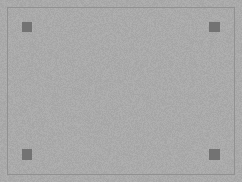
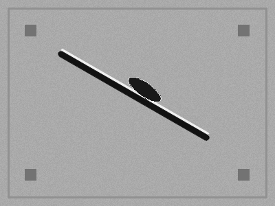

AgentCV 观感基线 v1 · 浅色无限板
对照 tldraw / Miro 干净度 · 图像为主画布 · JSON 次级 · 禁橱窗 Offset
无限画板 · 点阵底 · 图为主
选
线
距
圆
签
推导预览
意图：OK / 划痕
Locate
→
Defect
节点须回溯到意图约束
禁止无意图 Offset（橱窗拓扑）
检测图 A · plate_ok
ROI 可编辑

共享定位 · 主 ROI
选择即问 · 灰态草稿
「这块是划痕还是油污？」
确认发送
编辑
118.0 px
检测图 B · plate_ng_scratch
幽灵叠层

幽灵 ROI · 只读 · 点回共享源
意图标记
OK 区域 / 划痕判定
无「相对偏移 / 对齐」约束
推导 JSON / 次级 · 非主反馈
▾ 收起态示意
{
"nodes": [{"kind":"Locate","id":"n1"}, {"kind":"Defect","id":"n2"}], "edges": [{"from":"n1","to":"n2","kind":"requires"}],
"Offset": /* 本意图集 = 0 */
}